PROBLEM
People lack variety in their daily meals
People often don't have time to cook for themselves every day or struggle with finding new and easy recipes to make. As a result, they either resort to ordering takeout, meal prepping in bulk, or cooking the same meals everyday. The first option is costly and also tends to be unhealthy. The second and last option, while it is cheaper and more nutritious, eating the same few meals for several days at a time easily can get repetitive and boring.
EXPLORATION + DISCOVERY
Conducting surveys to understand our users
We conducted an online survey to understand our user's current cooking habits, with the main goal of learning their cooking habits, how they find ideas for what meals to cook, and their general opinions towards meal prepping.
Our survey included a total of 14 open and close-ended questions, consisting of 4 demographic questions and 10 questions about cooking habits. We recruited a total of 25 participants (8 males, 17 females) by sending our survey to online UCSD channels such as class discord servers and club group chats.
Summary of findings:
-
Findings report that 11 participants cook 2-3 times a week at home, 8 participants cook 5-6 times a week at home, 4 participants cook every day at home, 2 people cook once a week at home, and lastly, 1 participant does not cook at home (see Figure 1)
-
Findings report that 13 participants do not meal prep. However, 12 participants do meal prep (see Figure 2).
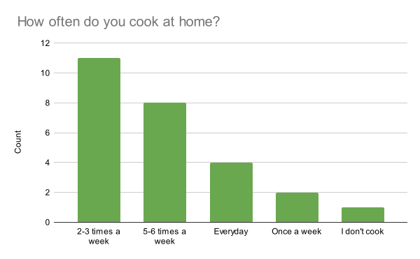
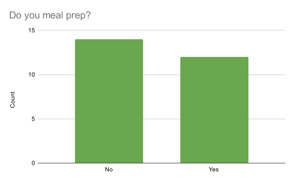
Some quotes from respondents:
-
"I go online and search for whatever I want to make. I don't really use recipes in detail, I just look at the general ingredients and steps and then go for it."
-
"I think it [meal prepping] is fast and convenient because it saves a lot of time cooking. However, I personally like to each fresh cook food because it just tastes better than meal prep. Moreover, meal prepping may get repetitive food over the week and have left over if you can finish it on time which eventually be in the trash can. It would be good for people who like it and can finish all the food."
-
"A pro is that it's healthy and saves money. Some cons are that it's limited to certain meals and gets repetitive."
How we plan to address user pain points:
-
Difficulty in finding recipes - Browse diverse recipes with a personalized recommendation system
-
Lack of variety in daily meals - Enjoy a variety of dishes by participating in meal exchanges
-
Laziness - No longer have to take as much effort thinking and cooking different meals everyday
COMPETITIVE AUDIT
What were the current solutions?
To explore the existing solutions, we analyzed the competitive space to find gaps that we could address.
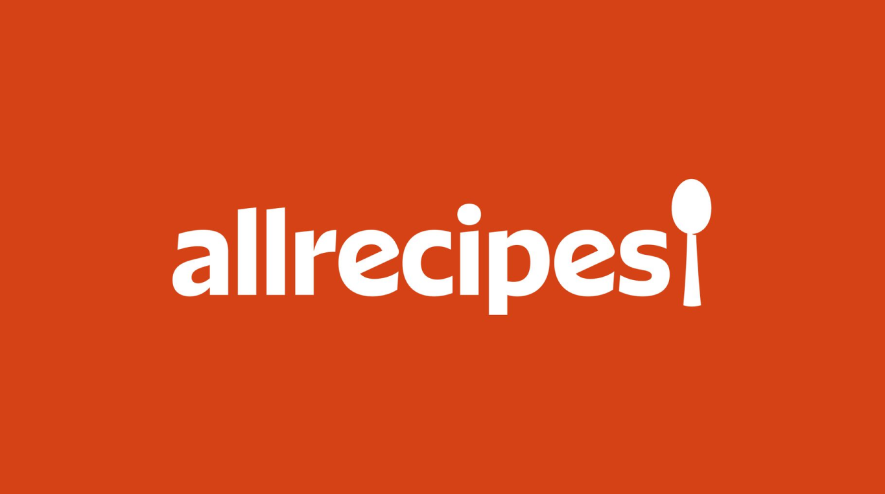
Allrecipes.com
Allrecipes.com has cooking videos, how-to guides, and articles on food trends, nutrition, and culinary techniques. It features shopping lists, meal planners, and a variety of meal selections.
Users can post recipes, comment and rate others' recipes, participate in forums
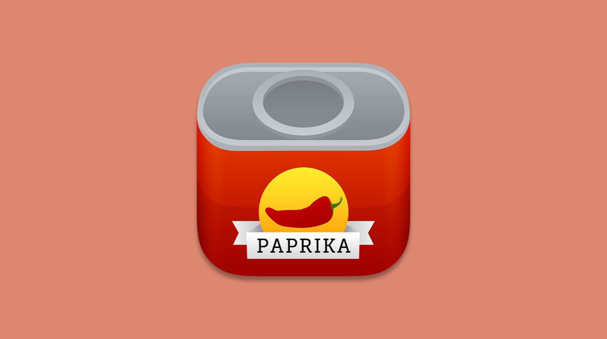
Paprika Recipe Manager
Paprika Recipe Manager 3 allows you to download and add your recipes, and create grocery lists. It features meal planners and ingredient tracking.
Users can share grocery lists, which allows users to add to a shared grocery list with live updates.
The competition did not address the repetitiveness of meal-prepping...
While Allrecipes and Paprika Recipe Manager 3 aided users in their meal-prepping process by providing features like grocery lists and easy access to recipes, neither of these addressed the problem that meal prepped meals get repetitive overtime.
OUR NOVEL IDEA
Reducing repetition by facilitating meal swaps!
After conducting research through surveys and competitive analysis, we found that the problem of repetitiveness was brought up by all survey respondents who meal-prepped, yet it has not been addressed by existing solutions on the market today.
Therefore, we plan to incorporate an interactive activity within the community or close friends by enabling not only the sharing of recipes, but also the exchanging of meal preps to address the full scope of our problem.
PROTOTYPING ROUND 1
Basic matching functionality using Google Sheets
In our first round of prototyping, we wanted to implement a "playable prototype" for our user testing session with the following features:
-
Uploading your own dishes and recipes
-
Match for meal exchanges with those who are also interested in trying your meal
-
Rating system for you to give and receive ratings from others based on presentation, taste, and user interactions
-
Enable comments and feedback for users to improve their recipes
-
An option to receive the dish's recipe from people you've exchanged with
To create this functionality, we used scripting within Google Sheets to enable automatic meal matching and rating calculations.

Users can upload an image of their dish, the recipe, and reheat instructions.
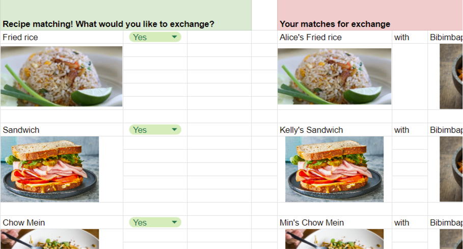
Users can decide if they would like to exchange meals on the left, and matches automatically appear on the right.
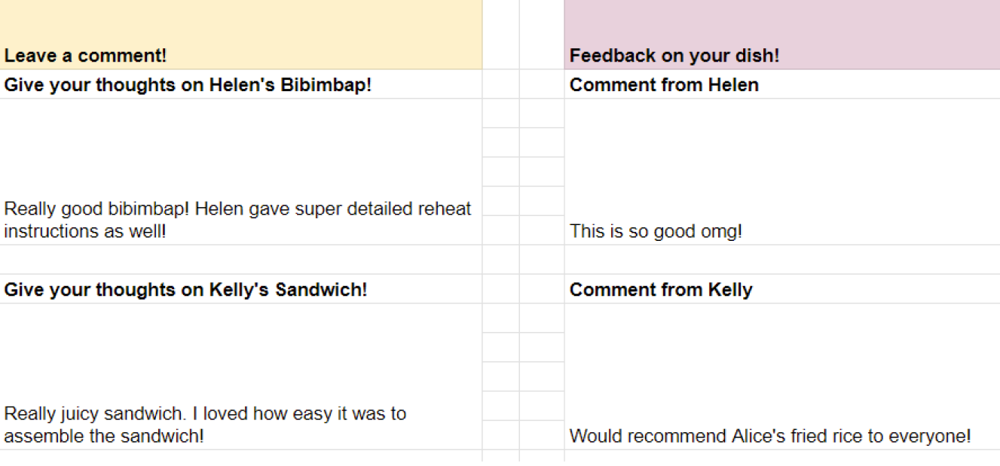
Leave comments after the exchange (left), and view the feedback you received (right).
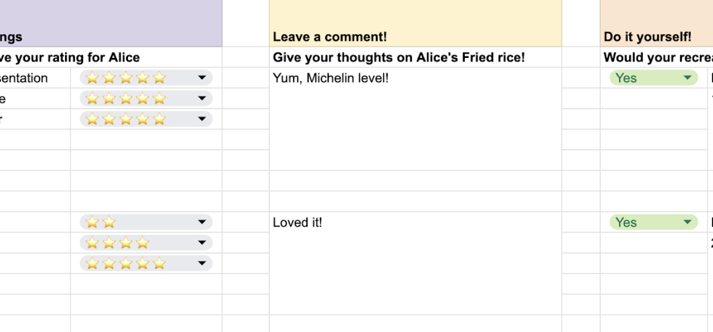
Give all users you've exchanged with ratings so users can build credibility over time.
View Prototype
Feedback and Key Takeaways
After conducting our first prototyping session, we sent out a quick feedback survey with our live audience to understand any issues with our initial prototype.
1. Lack of nutrition information
-
"I think have a step for the ingredients too and having users be able to see the ingredients before meeting up to account for allergies"
-
"I think something that I would like to see is making sure that the idea takes into account that people have dietary restrictions or preferences for food. It would be really helpful especially if you have a severe allergy."
2. Recipe sharing
-
"There are no regulations on how detailed the recipes should be. If they make the recipe too simplified, then it's difficult to recreate the dish based on their oversimplified recipe."
-
"You might want a recipe but because you don't match you don't get it and that can suck"
3. General prototype feedback
-
"Once I got the hang of the prototype, it made sense but it was difficult understanding the instructions at first or the structure of the prototype."
-
"The exchanged recipe didn't show up when I selected I would like to recreate. I'm not sure if thats a bug."
Considerations for round 2
-
Make sure the prototype accounts for nutrition information and dietary restrictions
-
Refine the recipe sharing process to address user concerns
-
Reconsider the current user flow to make it less confusing
-
Make the prototype look better overall
PROTOTYPING ROUND 2
Improving prototype based on user feedback
In our second round of prototyping, we improved the overall look of the prototype, as well as implemented a few changes based on the feedback we received last round.
Users can now:
-
Input dietary restrictions of the meal they created, which will show up to other users when their recipe appears on the matching screen
-
See all recipes that they're interested in, even if the other users don't want to match with them
-
View their feedback directly on the user profile page + an updated user rating section
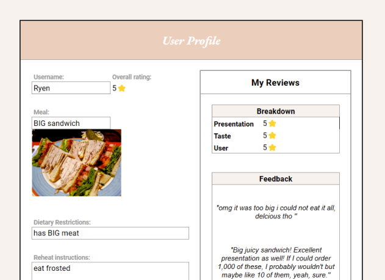
Addition of a dietary restriction field, which also appears in the matching page

Users can now see all recipes they're interested in, regardless of their matching status
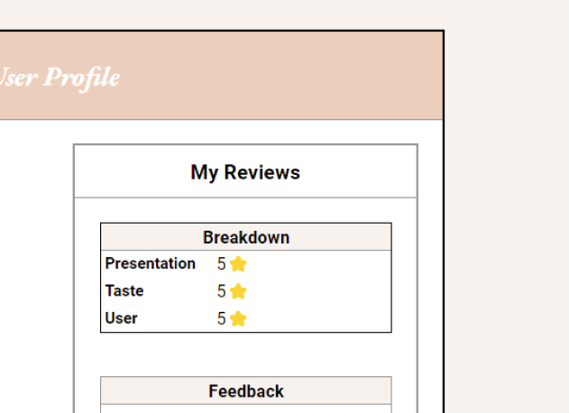
Comments now appear in the user's profile page, rather than at the end of the prototype
View Prototype
Feedback and Key Takeaways
After this round of prototyping, we sent out another quick feedback survey to the session participants. Our team noticed that this time around, the participants were able to finish the matching process a lot quicker. Overall, the feedback was positive and they enjoyed all the changes that we've made to the prototype. Given the time constraints, we concluded our prototyping and user testing phase and moved on to create a final prototype for our app!
Considerations for final prototype
-
More security features - Stricter onboarding and verification
-
Have reviews public on user profile - See reviews that other users left
-
Food Handler Certification - Ensure knowledge of proper food handling training
FINAL PRODUCT
The final high fidelity design
Here are the high fidelity screens we designed on Figma. These screens are representative of the functional Google Sheets prototype.

Onboarding screen 1 to preview experience

Onboarding screen 2 to preview experience

Onboarding screen 3 to preview experience

New user profile needs to be verified before swapping
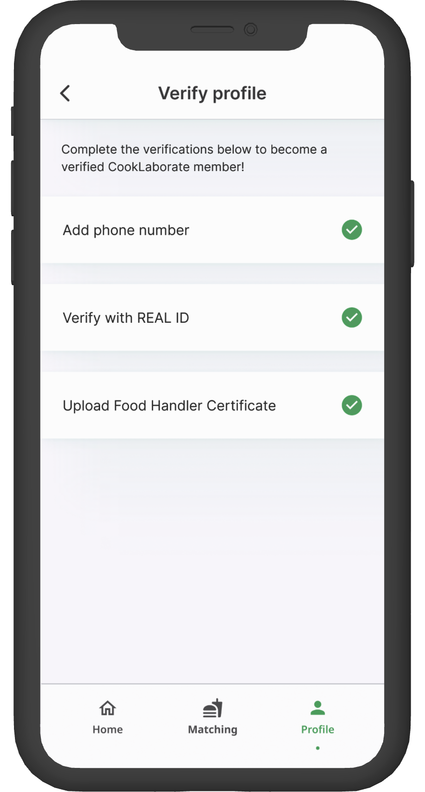
Verify number, ID, and upload certification

See recipes even without matching with users
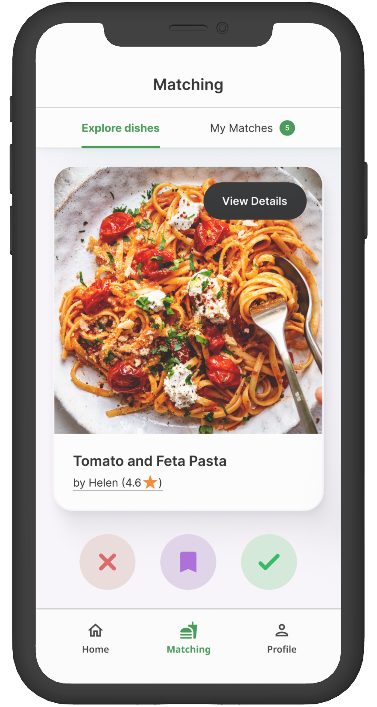
Choose meals you are interested in eating
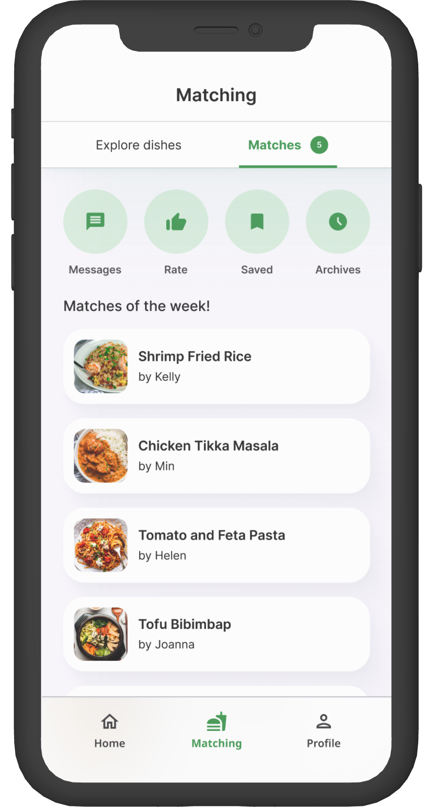
A list of all your matched recipes for swapping
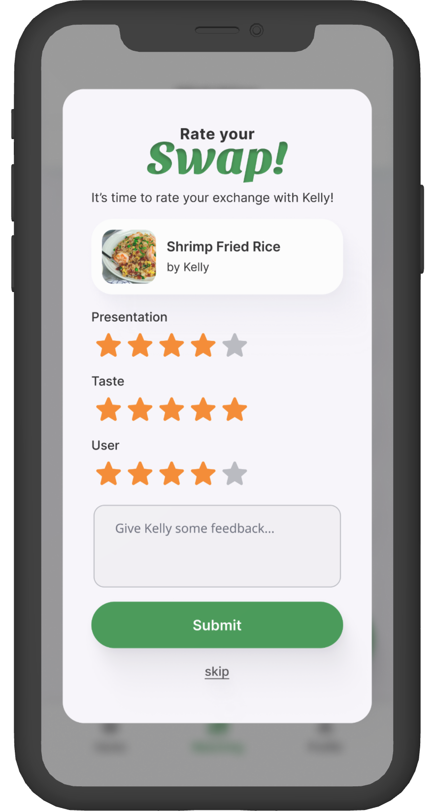
Rate your experience after the exchange
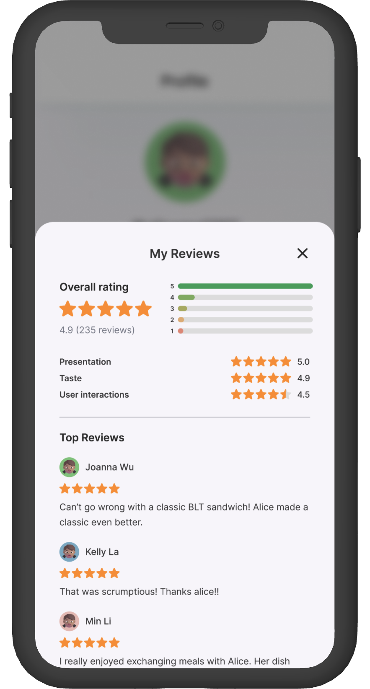
Profile page where user see ratings and edit meal
View Hi-fi Prototype
REFLECTION
Social structures and complexities
After concluding our design process, my group and I took some time to discuss the potential limitations of our project idea.
Difficulty establishing user trust
First, there's the problem of user trust because it may be difficult to trust that the meals they are receiving from the meal swaps were prepared under hygienic conditions and are safe to consume. We attempted to address this issue by adding user verification, where they need to verify their phone number, identity, and complete a food handling certification to become a member of the meal swapping community.
The possibility of exclusive groups
Next, our platform encourages community building by facilitating locally organized meal swap events. However, there is a possibility of forming exclusive groups, which may cause social division if certain individuals are consistently excluded from meal exchanges.
Diversity & inclusion inadequately addressed
Challenges revolving dietary restrictions, allergies, and cultural sensitivities may arise due to not being properly addressed by other users. To address this, we provided options for users to include dietary restrictions for their posted meals to notify users before they pick a dish.
TAKEAWAYS
What I learned from this
-
How to conduct user research to investigate ideas and determine pain points
-
It is useful to piggyback on other apps to test out our ideas
-
Prototype sessions and feedback from our target audience offer practical advice on how to enhance the user experience
REFLECTION
Social structures and complexities
After concluding our design process, my group and I took some time to discuss the potential limitations of our project idea.
Difficulty establishing user trust
First, there's the problem of user trust because it may be difficult to trust that the meals they are receiving from the meal swaps were prepared under hygienic conditions and are safe to consume. We attempted to address this issue by adding user verification, where they need to verify their phone number, identity, and complete a food handling certification to become a member of the meal swapping community.
The possibility of exclusive groups
Next, our platform encourages community building by facilitating locally organized meal swap events. However, there is a possibility of forming exclusive groups, which may cause social division if certain individuals are consistently excluded from meal exchanges.
Diversity & inclusion inadequately addressed
Challenges revolving dietary restrictions, allergies, and cultural sensitivities may arise due to not being properly addressed by other users. To address this, we provided options for users to include dietary restrictions for their posted meals to notify users before they pick a dish.